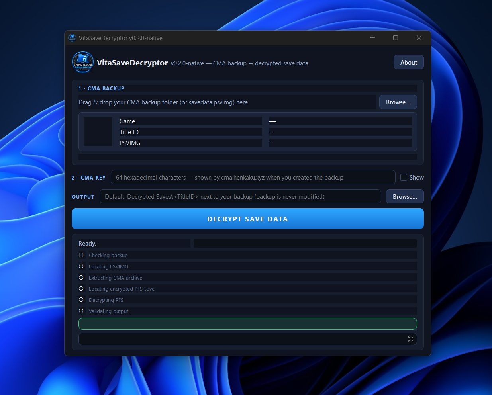
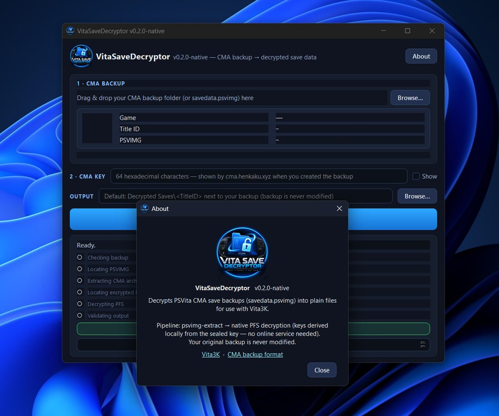

Vita Save Decryptor (native) turns a PS Vita CMA save backup (savedata.psvimg) into plain files ready for the
Vita3K emulator. It is a single Windows executable — no install, no setup.
The original tooling for CMA backups required an external program (psvpfsparser.exe) that phoned home to the
F00D key service at cma.henkaku.xyz. If that service goes down — or you're offline — decryption stops working.
This project reverse-engineered the entire PFS encryption scheme and re-implemented it in pure Python, so keys are now
derived locally from the save's own sealed key.
| 01 | The app in one minute |
| 02 | How to use the app — step by step |
| 03 | Troubleshooting & FAQ |
| 04 | How it was done — the reverse-engineering story |
| 05 | Technical reference — keys, XTS-AES & the ICV oracle |
| 06 | Credits, licenses & support |
savedata.psvimg — and the site shows you a 64-character hex key. Write it down; you need it for every backup.
.psvimg file itself or any folder that contains it. Paste the 64-hex CMA key into the field.

The decrypted set mirrors the game's PFS savedata layout:
your_output_folder/
├── system.dat ← save data (encrypted → now plain)
├── sce_sys/
│ ├── param.sfo ← metadata (title, size, version…)
│ ├── sdslot.dat ← slot info
│ ├── safemem.dat ← safe memory
│ ├── keystone ← Henkaku keystone (if present)
│ └── sealedkey ← the key material used for decryptionLoad this folder into Vita3K as a save file and you're done.
| Symptom | Cause & fix |
|---|---|
| "Invalid CMA key" | The key must be exactly 64 hex characters. Copy it fresh from the CMA site — no spaces, no quotes. |
| "CMA extraction failed (stage 1)" | Wrong CMA key for this backup, or a corrupted .psvimg. Each backup has its own unique key. |
| "No PFS save set found" | The archive isn't a Vita savedata. Make sure you backed up the game's savedata, not the whole app package. |
| "PFS decryption failed (stage 2)" | The sealed key didn't match this save — usually means the backup and key are from different backups. Pair them correctly. |
| Nothing happens on launch | Windows SmartScreen may block unsigned exes: click More info → Run anyway. Or check your antivirus quarantine. |
savedata.psvimg) + its 64-hex keyThe goal: remove the online key service. That meant answering one question — how does psvpfsparser turn a sealed key into per-file decryption keys? The answer required pulling apart the reference tool's C++ source and rebuilding its math from scratch.
xts_dec → pfs_decrypt_icv → XTS-AES.
Confirmed the cipher is XTS-AES-128 with two derived keys, 0x8000-byte sectors, IEEE-1619 perturbation that carries across all 512 sub-blocks per sector.
files.db (SCENGPFS v3) and found a clean rule in the type field:
type & 0x4000 → copy verbatim, otherwise XTS-decrypt. Verified against every file in the fixture — no hardcoded file lists.
Each encrypted file is keyed by a per-file salt (a 32-bit value stored as the name of its .icv record).
The set contains several salts and no direct "file → salt" mapping — so how do you know which one to use? Heuristics (entropy, text-likeness)
worked for most files but failed on small binaries like keystone, where three candidate salts all looked plausible.
| File | Type rule | Salt (ICV oracle) | Result vs reference tool |
|---|---|---|---|
system.dat | XTS-decrypt | aad62c72 | ✔ byte-exact (105,472 B) |
sce_sys/sdslot.dat | XTS-decrypt | 58b8e8cf | ✔ byte-exact (46,080 B) |
sce_sys/safemem.dat | XTS-decrypt | 621b0519 | ✔ byte-exact (16,384 B) |
sce_sys/keystone | XTS-decrypt | cbab98f3 | ✔ byte-exact (1,024 B) |
sce_sys/param.sfo | copy verbatim | — | ✔ identical |
sce_sys/sealedkey | copy verbatim | — | ✔ identical |
A regression test suite (tests/test_pfs_native.py) re-runs this end-to-end on the vendored fixture — 9 checks, all passing —
so any future change is immediately checked against ground truth.
# 1. klicensee — AES-CBC decrypt of the sealed-key blob's first block
klicensee = AES-CBC-Decrypt( sealedkey_blob[0:16], key=PSVITA_FIXED_KEY, iv=zeros )
# 2. per-file keys (ctr selects data key vs tweak key)
base0 = SHA1( klicensee )
saltin = salt.to_bytes(4,"little") + ctr.to_bytes(4,"little") # 8 bytes
key_ctr = SHA1( base0 || SHA1(saltin).digest() ).digest()[ :16 ]
dec_key, tweak_enc_key = key_ctr(ctr=1), key_ctr(ctr=2)
# 3. ICV secret (for the Merkle oracle)
secret = SHA1( SHA1(klicensee) || SHA1( [0xA, salt]_LE8 ) )# per 0x8000-byte sector: seed once, perturb across all 512 sub-blocks
seed = AES-ECB( tweak_enc_key, u64_LE( 0x8000 * sector_index ) )
for each 16-byte block i in the sector (i = 0..511):
tweak_i = IEEE-1619-perturb( seed, i ) # GF(2^128) × x, carry across blocks
plain[i] = AES-ECB-Decrypt( dec_key, cipher[i] XOR tweak_i )# leaf per sector: HMAC-SHA1 over the CIPHERTEXT sector
leaf_j = HMAC-SHA1( secret, ciphertext_sector_j )
# complete binary tree, BFS heap layout (1-based; children of i are 2i, 2i+1)
root = merkle_fold( leaves ) # left-inherits / right-advances
match = ( root == stored_icv_root_in_.icv_record ) # exactly one salt matches per file| Constant | Value / rule |
|---|---|
PSVITA_FIXED_KEY | 16-byte fixed key (in source) — AES-CBC-decrypts the sealed-key blob's first block to recover klicensee |
| Sector size | 0x8000 bytes = 512 × 16-byte sub-blocks; XTS seed advances per sector |
| Cipher mode | XTS-AES-128, two keys — data key (ctr=1) + tweak key (ctr=2), IEEE-1619 perturbation across all 512 blocks |
| Per-file salt | 32-bit LE; key = SHA1( SHA1(klicensee) ‖ SHA1(salt‖ctr) )[:16] |
| ICV record header | nSectors @ offset 0x28; stored ICV root (HMAC-SHA1) @ offset 0x2C |
| files.db type rule | type & 0x4000 → copy verbatim, otherwise XTS-decrypt |
The New Game+ — author, GUI, and native re-implementation. This report was written as part of the open-source release at github.com/Johnzx07/vita-save-decryptor.
| Component | License | Role in this project |
|---|---|---|
| Vita Save Decryptor (this app) | MIT — © 2026 The New Game+ | The application itself |
| psvimgtools — Yifan Lu | MIT (© 2017) | Bundled stage-1 CMA unpacker + Cygwin DLLs |
| PySide6 — The Qt Company & contributors | LGPL v3 / Commercial | GUI toolkit (dynamically linked, unmodified) |
| pycryptodome — Helder Eijs | BSD-3-Clause | AES / SHA1 primitives for stage 2 |
| h-encore — TheFloW | MIT (© 2018) | Public regression test fixture (PCSG90096) only |
| psvpfstools — motoharu-gosuto | No license published upstream | Read-only behavioral reference (nothing copied or redistributed) |
This work builds on PS Vita preservation research from the broader community, including the Vita3K emulator project and its PFS tooling lineage. No Vita3K source is compiled into this app — the credit reflects research, compatibility work, and community guidance.

| 📺 YouTube | youtube.com/@TheNewGamePluss — guides & walkthroughs |
| ☕ Ko-fi | ko-fi.com/thenewgameplus — buy me a coffee |
| 💬 Discord | NGP "Bench" community — hang out & get help |
THIRD_PARTY_NOTICES.md and
licenses/ in the repository.